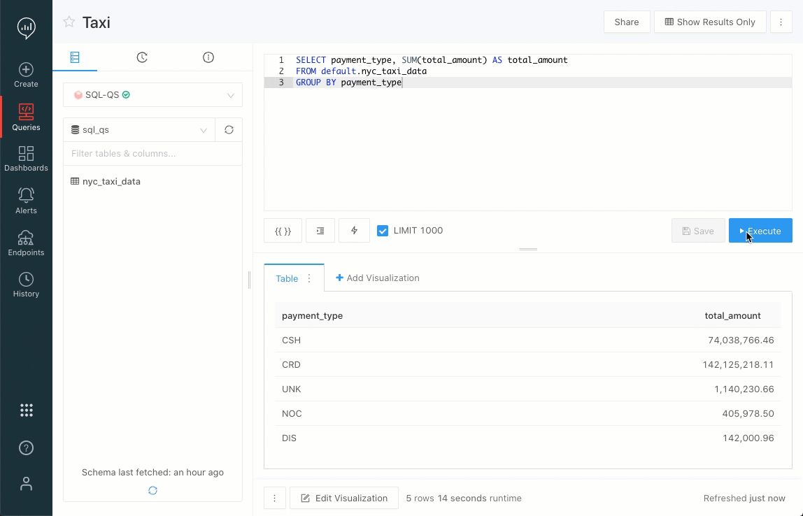
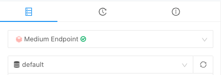
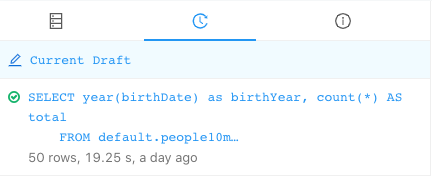

Databricks SQL release notes
This article lists new Databricks SQL features and improvements, along with known issues and FAQs.
Release process
Databricks releases updates to the Databricks SQL web application user interface on an ongoing basis, with all users getting the same updates, rolled out over a short period of time.
In addition, Databricks typically releases new SQL warehouse compute versions regularly. Two channels are always available: Preview and Current.
Note
Releases are staged. Your Databricks account might not be updated with a new SQL warehouse version or Databricks SQL feature until a week or more after the initial release date.
Channels
Channels let you choose whether to use the Current SQL warehouse compute version or the Preview version. Preview versions let you try out functionality before it becomes the Databricks SQL standard. Take advantage of preview versions to test your production queries and dashboards against upcoming changes.
Typically, a preview version is promoted to the current channel approximately two weeks after being released to the preview channel. Some features, such as security features, maintenance updates, and bug fixes, may be released directly to the current channel. From time to time, Databricks may promote a preview version to the current channel on a different schedule. Each new version will be announced in the following sections.
To learn how to switch an existing SQL warehouse to the preview channel, see Preview Channels. The features listed in the user interface updates sections are independent of the SQL Warehouse compute versions described in the Fixed issues section of the release notes.
Available Databricks SQL versions
Current channel: Databricks SQL version 2023.40
Preview channel: Databricks SQL version 2023.50
December 21, 2023
The Lakeview Counter visualization type shows colors when comparing
BigIntvalues in the main Value and Target fields.The tooltips that appear when toggling column visibility on tables in Lakeview have been improved. They behave as expected and do not persist.
Users can now use Databricks Assistant to create visualizations in Lakeview. See Create visualizations with Databricks Assistant for Lakeview.
For new charts, heatmap-type charts respect the reverseY setting.
Fixed a rendering performance issue for notebooks with a large number of visualizations.
December 14, 2023
Fixed a bug where Lakeview dashboards were not appearing in the Lakeview listing page without a manual page refresh.
Use the escape key to cancel the creation of a Lakeview widget when placing it on the canvas.
Catalog Explorer now displays Vector Search indexes in the UI as part of the Databricks Vector Search public preview.
December 7, 2023
User interface updates
Lakeview dashboards can be added to favorites for quick access.
Copy and paste keyboard shortcuts are supported while drafting a Lakeview dashboard. Also, the delete key removes selected widgets.
Enhanced Lakeview widget titles and descriptions to prevent clipping text during load.
Corrected visualization formatting issue where large integer values were mistakenly displayed as floats.
Fixed an issue with Databricks SQL dashboards where expanded chart views were sometimes showing blank charts.
Bar charts with quantitative fields on both X and Y axes render more legible data labels.
Fixed issue in the SQL Editor so that tables with the word
streamin the title no longer conflict with the reserved keyword. These tables now appear as expected in the Schema browser and are not error-highlighted.The query history page now supports column resize and column selections.
The query history page supports two new columns: Query source and Query source type.
BI options, like Tableau and Power BI, are easier to find in Catalog Explorer on eligible pages.
November 30, 2023
User interface updates
The features listed in this section are independent of the SQL Warehouse compute versions described above.
Pie charts in Lakeview can now have customized color assignments.
Visualization transformations in Lakeview are now retained when switching between compatible field types.
Added title settings for Lakeview pie chart angle channels.
The Lakeview dataset dropdown is now searchable for easier navigation.
Lakeview supports full numerical display for values under 10,000, eliminating abbreviations.
Added capability to color-code categorical date fields in Lakeview.
Lakeview users can now highlight chart legends with their cursor to copy and paste the values.
Pie charts in Lakeview now feature a label toggle option.
Standardized a default blue color across all Lakeview visualizations.
Lakeview column icons in transformations now consistently match the transformation method used.
Controls in Lakeview’s edit panel now auto-wrap for enhanced readability.
Released an enhanced color editor for Lakeview visualizations.
The control for table font conditions in Lakeview are now wrapped to improve readabilty.
Improved dark mode compatibility for labels in new charts.
New charts now consistently prioritize label display inside bars.
Fixed a bug where some right-click menu actions weren’t working in the SQL Editor.
November 16, 2023
User interface updates
The features listed in this section are independent of the SQL Warehouse compute versions described above.
Databricks SQL queries, alerts, and dashboards have a new scheduler and scheduling interface.
Lakeview widgets are now easier to resize due to a larger resize trigger zone.
Workspace admins can now change the owner of a Lakeview dashboard. From edit mode on a Lakeview dashboard:
Click Share
Click

Click Assign new owner
Users can toggle labels on or off in Lakeview.
Visualizations:
New chart labels now strongly prefer being inside a bar when possible.
New chart labels now appear properly on stacked bars that are wide enough to show the whole label.
Label colors inside bar charts are now more consistent.
November 9, 2023
Changes in 2023.50:
Highlights:
You can now use named parameter invocation on SQL and Python UDF.
SQL Language updates:
The following builtin functions have been added:
- `from_xml`: Parses an XML STRING into a STRUCT.
- `schema_of_xml`: Derives a schema from an XML STRING.
- `session_user`: Returns the logged-in user.
- `try_reflect`: Returns NULL instead of the exception if a Java method fails.
The following builtin functions have been enhanced:
function invocation. Table arguments to functions support partitioning and ordering: You can now use
PARTITION BYandORDER BYclauses to control how table arguments are passed to a function.`mode`: Support for an optional parameter forcing a deterministic result.
`to_char`: New support for
DATE,TIMESTAMP, andBINARY.`to_varchar`: New support for
DATE,TIMESTAMP, andBINARY.`array_insert()` is 1-based for negative indexes: The
array_insertfunction is 1-based for both positive and negative indexes. It now inserts a new element at the end of input arrays for the index -1.
User interface updates
The features listed in this section are independent of the SQL warehouse compute versions described above.
Visualizations:
Tooltips for new charts show only hovered items for high-cardinality charts.
New charts automatically align dual-axis charts at zero.
Charts changed rotated label and axis text angle direction from -90 to 90 degrees.
Charts now use the label’s width to decide rotation.
Lakeview Dashboards:
Fix: Table rows in Lakeview dashboards no longer add vertical padding when only a small number of rows are returned.
Cloning a new Lakeview dashboard widget first attempts to place the clone to the right of the original, provided there is sufficient space on the canvas. If insufficient space is available, the clone is placed below the original.
You can now reassign the owner of a Lakeview dashboard via the Share dialog.
SQL Editor: Autocomplete is now less aggressive and dismisses automatically at the end of statements
November 2, 2023
Improvements:
The following are improvements to Lakeview dashboard lineage:
Added distinct icons for tables, views, and materialized views.
Added support for vertical scrolling in the event of many upstream data sources.
Improved error message when viewer lacks permissions on the upstream object.
Clarified messaging around sample data tables and HMS data.
Added key value tags to upstream data sources.
Fix:
Fixed an issue in new charts that prevented rendering after renaming a series with boolean values.
October 26, 2023
Changes in Databricks SQL version 2023.45
Highlights:
Predictive I/O for updates is now generally available. See What is predictive I/O?
Deletion vectors are now generally available. See What are deletion vectors?
Query optimizations:
Removed the outer join if they are all distinct aggregate functions. SPARK-42583
Optimized the order of filtering predicates. SPARK-40045
SQL function updates:
Added support for implicit lateral column alias resolution on
Aggregate. SPARK-41631Support for implicit lateral column alias in queries with Window. SPARK-42217
Support for for Datasketches
HLLSketch. See hll_sketch_agg aggregate function.Added the
try_aes_decrypt()function. See try_aes_decrypt function.Support for CBC mode for
aes_encrypt()andaes_decrypt(). See aes_decrypt function.Added support for aes_encrypt IVs and AAD. SPARK-43290
Implement bitmap functions. SPARK-44154
Added the
to_varcharalias forto_char. See to_varchar function.Added
array_compactsupport. See array_compact function.Support for udf
luhn_check. See luhn_check function.Added analyzer support of named arguments for built-in functions. SPARK-44059
Support for
TABLEargument parser rule forTableValuedFunction. SPARK-44200array_insertnow fails with 0 index. SPARK-43011Added
NULLvalues forINSERTwith user-specified lists of fewer columns than the target table. SPARK-42521DECODEfunction returns wrong results when passed NULL. SPARK-41668
User interface updates
Improvements:
The Lakeview SQL editor now supports keyboard shortcuts to run queries.
Filters in Lakeview now list quick relative date range selections for the last 7, 14, 28, 30, 60, and 90 days.
Periods in data field names no longer result in blank charts.
The legacy schema browser now works with Unity Catalog.
Implemented performance improvements to load only the active tab in the SQL Editor, decreasing initial load time by up to 20%.
AI-generated table comments in Catalog Explorer are now generally available.
Fixes:
Bars on temporal bar charts are now centered over the date tick mark.
Data label templates with aggregate expressions now use the proper numeric formatters.
Zooming on new charts now works with a scale set to categorical using temporal data.
New article:
Released a new article showing all of the Lakeview visualizations, including screenshots and notes showing how to recreate each the visualizations in each screenshot. See Lakeview dashboard visualization types.
October 19, 2023
Improvements:
Drag and drop in schema browser is now available.
The Select Table modal in Lakeview dashboards makes it easier to select from all tables in a catalog or schema and now uses autocomplete search predictions as you type.
Fixes:
Legend selection tooltip instructions specify Mac users use
cmdand Windows users usectrl.
Enhanced visibility of truncated messages in Lakeview dashboards when rendered data exceeds limits.
Charts with truncated data display consistent colors as seen in the editor.
October 12, 2023
Improvements:
Text filter values containing special characters now filter correctly in Lakeview dashboards.
New charts support
@@namedata labels on scatter plots.Customized percentage formats apply to grouped chart tooltips in new charts.
Workspace binding extension UI is GA.
Fixes:
Improved label rendering on new charts to prevent labels from spilling outside chart boundaries.
Increased the contrast of tick and grid lines on new charts for improved visibility.
Increased the axis label spacing to improve readability on new charts.
October 5, 2023
Improvements:
Accurate tooltips have been added for publish mode actions and date lineage in Lakeview dashboards.
Conditional formatting and link templates in Lakeview table visualizations now support hidden columns.
Optimized label positioning for wide-bar temporal charts to enhance clarity in new charts.
Counter visualization in Lakeview retains its transformations even after other fields are removed, ensuring consistency.
Hovering over a series in a chart now dims the surrounding series in the tooltip to improve readability in new charts.
New charts using percentage values now display tooltips with absolute values.
Added autocomplete support for creating volumes.
Closing a non-active tab no longer switches tabs.
Selected run clearly indicates when highlighting text.
Fixes:
Improved error message wording in Pivot Tables when the data is truncated.
Fixed a rendering error in Pivot Tables where colors were not showing when using BigInt data types.
When downloading PNGs in new charts with numerous legend items, removed the color symbol for overflow legend entries.
Lines in new charts will maintain a consistent thickness even at the topmost view boundary.
In Lakeview, if no dataset exists, the dataset picker in the Canvas is empty.
Delta Live Tables are properly detected by the SQL Parser and won’t show-up as invalid tables in Schema Browser.
Tooltips was added to sidebar.
September 28, 2023
Improvements:
Published Lakeview dashboards now have a refresh button.
Improved error messages for users who do not have access to a Lakeview dashboard.
Filter configuration in Lakeview dashboards now lists valid fields at the top of the selection list.
Downloading a chart as a PNG from a Lakeview dashboard now retains the title and description.
Delta tables history improvement in Catalog Explorer includes adding filters for date range, user, and operation type, as well as sortable columns, and inline links to associated Jobs and Notebooks.
Dark mode support added across legends, tooltips and table visualization.
Fix:
Filter selections are no longer cleared when refreshing a Lakeview dashboard.
September 21, 2023
Improvements:
Pivot Table rendering performance has been improved.
New DuBois pattern for lineage tabular views in the UI.
September 14, 2023
Improvement:
File names are now preserved when downloading PNGs in new chart visualizations. See New chart visualizations in Databricks.
September 7, 2023
Databricks SQL version 2023.40 available
Rollout schedule
Preview rollout for 2023.40: Between Sep 5, 2023 and Sep 11, 2023
Current rollout for 2023.40: Between Sep 18, 2023 and Sep 25, 2023
Changes in 2023.40:
Tags are now available with Unity Catalog.
Databricks Runtime returns an error if a file is modified between query planning and invocation.
Databricks ODBC/JDBC driver support.
Enable time series column labeling.
New bitmap SQL functions.
Improved encryption functions.
Unity Catalog support for
REFRESH FOREIGN.INSERT BY NAMEis now supported.Share materialized views with Delta Sharing.
User interface updates
Improvements:
New charts are now available, featuring faster render performance, beautiful colors, and improved interactivity. See New chart visualizations in Databricks.
In the graph view of Query Profile, you can now view the Join type on any node containing a join in the query plan.
Data Explorer is renamed to Catalog Explorer to recognize the fact that you can use it to work with all securable objects in Unity Catalog, not just data objects. See What is Catalog Explorer?.
The Databricks SQL Statement Execution API is now GA with Databricks SQL Version 2023.35 and above. The API allows you to submit SQL statements for execution on a Databricks SQL warehouse, check the status and fetch results, or cancel a running SQL statement execution. See Statement Execution API.
August 31, 2023
New feature:
Tagging for Unity Catalog is in Public Preview. You can use tags to simplify search and discovery of your data assets. See Apply tags.
August 24, 2023
Improvement:
Autocomplete stops suggesting recommendations after you press the spacebar.
Schema Browser no longer sees
liveDelta Live Tables as broken tables.
August 16, 2023
Improvement:
The Catalog dropdown in the SQL editor now closes when you switch tabs. Previously, when you switched tabs, the dropdown would remain open.
August 10, 2023
Improvement:
Autocomplete now supports the new syntax for setting Unity Catalog tags. For information on commands, see SQL language reference.
August 3, 2023
Improvements:
The underlying Monaco Editor now uses version 37.1.
Autocomplete support for
SHOW ARCHIVED FILES FORDelta commands.
July 27, 2023
Improvements:
The SQL editor is now compatible with Windows newline characters, ensuring that query formatting works as expected in all cases.
You can open the query profile navigation from notebook results. For queries, run your query with SQL warehouse.
July 20, 2023
Databricks SQL version 2023.35 available
Rollout schedule
Preview rollout for 2023.35: Between Jul 18, 2023 and Jul 24, 2023
Current rollout for 2023.35: Between Jul 31, 2023 and Aug 8, 2023
Changes in 2023.35:
Enhanced reliability for
VACUUMwith shallow clone in Unity Catalog.Support for Python UDFs in SQL.
Delta Lake UniForm for Iceberg is in Public Preview.
Delta Lake liquid clustering is in Public Preview.
Archival support for Delta Lake.
IDENTIFIER clause support.
Unity Catalog support for Python and Pandas User-Defined Functions (UDFs).
Improvement:
Table popularity in Catalog Explorer is available to all Unity Catalog users.
July 13, 2023
Improvement:
Unity Catalog users can now view additional table insights in Catalog Explorer such as frequently joined tables, frequent users of a given table, and frequently used notebooks and dashboards.
June 22, 2023
Public Preview:
Databricks SQL now supports large language models (LLMs) hosted on model serving endpoints. Call
ai_query()to access your LLM. This function is only available in Public Preview on Databricks SQL Pro and Serverless. To participate in Public Preview, submit the AI Functions Public Preview enrollment form.
June 15, 2023
New feature:
SQL tasks in Workflows are now generally available. You can orchestrate Queries, Dashboards, and Alerts from the Workflows page. See Task type options.
A new schema browser is now in Public Preview, featuring an updated UX, a For You tab, and improved filters. The schema browser is available in Databricks SQL, Catalog Explorer, and notebooks. See Browse data.
June 8, 2023
DBSQL version 2023.30 available
Changes in 2023.30
New SQL built-in functions, such as
array_prepend(array, elem),try_aes_decrypt(expr, key [, mode [, padding]]), andsql_keywords().You can now use shallow clone to create new Unity Catalog managed tables from existing Unity Catalog managed tables. See Shallow clone for Unity Catalog tables.
You can now use
CLONEandCONVERT TO DELTAwith Iceberg tables that have partitions defined on truncated columns of typesint,long, andstring. Truncated columns of typedecimalare not supported.START VERSIONis now deprecated forALTER SHARE.
June 1, 2023
Improvements:
Binary data will now render as a hex string when using the Arrow format.
In the SQL Statement API, the CSV format is now supported for the
EXTERNAL_LINKSdisposition. This allows clients to extract up to 100 GiB of data in CSV format with pre-signed URLs, whereas theINLINElimit for JSON is 16 MiB.
May 29, 2023
New feature:
You can now use the add data UI to load data from a cloud object storage path that’s defined as a Unity Catalog external location. For more information, see Load data using a Unity Catalog external location.
May 25, 2023
Improvements:
You can now toggle the autocompletion result panel.
Disable the enter key so it no longer accepts autocomplete suggestions. Under DBSQL User Settings, click Editor Settings, then New Editor settings. Turn off *Enter key accepts autocomplete suggestions*.
Fixes:
Sorted table headers now have colors.
Chart lines now render correctly.
May 18, 2023
Improvement:
In the SQL Statement API, the
EXTERNAL_LINKSdisposition now supports theJSON_ARRAYformat. You can extract up to 100 GiB of data in JSON format with pre-signed URLs. TheINLINElimit for JSON is 16 MiB.
May 11, 2023
New feature:
Schema Browser is now generally available in Catalog Explorer.
Improvements:
On-hover table detail panel showing is less sensitive.
The escape key now closes the autocomplete panel.
View definitions now have syntax highlighting in the Catalog Explorer details tab.
Fixes:
Pivot tables now correctly render on Windows devices.
Completion suggestions now properly follows the case of the first keyword.
May 4, 2023
Databricks SQL Version 2023.26 Available
Rollout Schedule
Preview rollout for 2023.26: Between April 19, 2023 and April 25, 2023
Current rollout for 2023.26: Between May 3, 2023 and May 10, 2023
Changes in 2023.26
Photon returns an error if a file is modified between query planning and execution.
New features and extended support for Predictive I/O features. See Databricks Runtime 13.0 (unsupported).
Use the Databricks connector to connect to another Databricks workspace.
CREATE TABLE LIKEfeature for Delta tables.New metadata column fields denoting file block start and length.
New H3 geospatial functions. See H3 geospatial functions.
New SQL built-in functions. See Databricks Runtime 13.0 (unsupported).
User interface updates
Improvements:
Administrators can change warehouse owners using the user interface or the API. See SQL warehouse access control.
Catalog Explorer now displays account service principals in user lists for assets in Unity Catalog. For example, account service principals are visible when editing privileges or changing owners in Catalog Explorer.
Custom chart labels support the ability to reference any column within the dataset.
Dashboard filters now load column names, even when using queries that don’t have catalog or schema info.
April 27, 2023
Improvements:
The SQL editor now relies on the Monaco editor for a more reliable editing experience.
SQL History list page (Queries) now includes the Dubois Design System.
April 20, 2023
Improvements:
Introduces new pivot tables that allow you to aggregate more than 64k results.
Databricks SQL tables and visualizations now support BigInt, 38bit Decimals, and non UTF-8 characters. For numbers, the default setting is now user-defined digit precision.
Autocomplete now suggests frequent past joins for Unity Catalog tables, powered by Unity Catalog lineage data in Databricks Runtime 12.0 and above.
Cloud Fetch is enabled by default in AWS workspaces with bucket versioning enabled. If you have bucket versioning enabled, Databricks recommends setting a lifecycle policy to automatically remove old versions of uploaded query results. See Advanced configurations.
New feature:
Return text generated by a selected large language model (LLM) given the prompt with ai_generate_text. This function is only available as public preview on Databricks SQL Pro and Serverless. To participate in the public preview, populate and submit the AI Functions Public Preview enrollment form.
April 13, 2023
New feature:
The
TIMESTAMP_NTZtype represents values comprising of fields year, month, day, hour, minute, and second. All operations are performed regardless of time zone. See TIMESTAMP_NTZ type.
Improvements:
Users can now send formatted results within alerts by using the
QUERY_RESULT_TABLEtag in a custom alerts message.Users can now view the file data size for Unity Catalog tables in Catalog Explorer.
April 6, 2023
Databricks SQL Version 2023.20 Available
Rollout Schedule
Preview rollout for 2023.20: Between Mar 15, 2023 and Mar 23, 2023
Current rollout for 2023.20: Between Mar 27, 2023 and Apr 3, 2023
Changes in 2023.20
Delta Lake schema evolution supports specifying source columns in merge statements.
Remove all NULL elements from an array using array_compact.
To append elements to an array, use array_append.
To anonymize sensitive string values, use the mask function.
Common error conditions now return SQLSTATE.
Invoke table-valued generator functions in the regular
FROMclause of a query.Use the
from_protobufandto_protobuffunctions to exchange data between binary and struct types. See Read and write protocol buffers.Improved consistency for Delta commit behavior for empty transactions relating to
update,delete, andmergecommands.Behavior change
The lateral column alias feature introduces behavior changes during name resolution. See Behavior changes.
April 3, 2023
New feature:
The Create or modify table from file upload page now supports JSON file uploads. For more information, see Create or modify a table using file upload.
March 30, 2023
Improvements:
On the warehouse monitoring page, you can now view the query history for the selected time range along with your scaling charts. You can also view currently running and queued queries, active SQL sessions, the warehouse status, and the current cluster count. See Monitor a SQL warehouse.
Map clustering is now off by default in Marker maps.
Tooltips for visualization truncation and render limits have been added.
Fixes:
Charts now respect the original order when sorting is disabled for the axis values and the chart has the group by column.
March 23, 2023
Improvements:
Visualizations now support time binning by week.
Totalnow calculates all data beyond the 100 X 100 cells up to 64k results in notebooks pivot tables.Users can now format cell values in the new notebooks pivot table.
File, query, and feature store lineage are available.
March 9, 2023
New feature:
The Databricks SQL Statement Execution API is now available in Public Preview. Statement Execution provides endpoints that are running SQL statements on a Databricks SQL warehouse. It can also check the status, fetch results, and cancel a running SQL statement.
Improvement:
The SQL admin console has been combined with the general admin settings to create a unified experience for admin users. All SQL admin settings are now accessed from the admin console.
Alert destinations are now called notification destinations.
Fixes:
Tables no longer display two scrollbars.
Blank widget titles no longer get overwritten on dashboards.
February 23, 2023
Improvement:
TINYINTis now supported in results tables in notebooks.
Fix:
Fixed a bug where scrolling on the create dashboard filter modal resulted in an error.
February 16, 2023
Improvements:
Data labels on charts now show more characters to avoid truncating descriptions.
Autocomplete now recognizes
range()and Python UDFcreatefunctions.Autocomplete now avoids initiating snippets on decimals and within code comments.
Fixes:
Users can now zoom in on maps.
In notebooks, colors are now correctly assigned to charts.
February 2, 2023
Improvements:
Support for
DESCRIBE DETAILSin the editor.Improved schema browser loading speed.
You can now view a list of possible columns on the side panel of a
SELECT *.
January 26, 2023
Improvement:
Your query’s error messages now include links to the related documentation topic that describes the error.
January 19, 2023
Improvements:
You can now find a What’s New panel that highlights key enhancements. You can open and close this panel by clicking the gift icon.
Admins can now change ownership of SQL warehouses.
You can now filter across multiple visualizations in a dashboard by clicking Add > Filter and selecting the query and columns for filtering.
January 12, 2023
Improvements:
Visualization widget titles on dashboards are now formatted as Visualization name - Query name by default.
Added H3 Geospatial functions to the inline panel reference.
Added inline references for SQL syntax like
CREATE TABLEandOVER.
Fixes:
Sorting and reverse toggles are now available when the X-axis scale is set to automatic.
Heat maps and pivot tables are now responsive for certain edge cases.
The Categorical Y-axis tick marks are now sorted by default.
Query drafts are no longer lost after doing a browser refresh.
December 8, 2022
Databricks SQL alerts now support alerts for aggregations of query result columns such as
SUM,COUNT, andAVG.The default visualization title is now ‘VisualizationName - QueryName’ when creating new widgets on dashboards.
November 17, 2022
Alerts:
Chatworks, Mattermost, and Google Hangouts Chat are no longer notification destinations.
Improvement:
The y-axis now displays numbers as percentages when checking percent values.
The workspace administrator setting to disable the upload data UI now applies to the new upload data UI. This setting applies to the Data Science & Engineering, Databricks Machine Learning, and Databricks SQL personas.
Fixes:
Fixed an issue in Databricks SQL alerts where comparing against null values evaluated incorrectly.
Fixed an issue where scrollbars on pivot tables disappeared.
Fixed an issue where the schema browser couldn’t resize with overflowed tabs.
November 10, 2022
Improvement:
You can now create a dashboard filter that works across multiple queries at the same time. In Edit dashboard mode, choose Add, then Filter, then New Dashboard Filter.
Autocomplete now supports
CREATE MATERIALIZED VIEW.
Fix:
Fixed an issue where scrolling to the end of a set of dashboard paged results would send an error.
Fixed an issue where switching from a stacked bar chart to a line chart kept the stacking property.
Fixed duplicated fetch calls.
November 3, 2022
Improvement:
When requesting access in Databricks SQL, the default permission is now “can run”.
Fixes:
Fixed an issue where sorting by
created_atusing the Queries and dashboards API did not return the correct sort order.Fixed an issue where columns containing URLs with HTML formatting had overly wide column widths.
Fixed an issue where
WHEREkeyword wasn’t highlighted.
October 27, 2022
Improvements:
The row limit for downloading query results to Excel has been increased from 64,000 rows to 100,000 rows. CSV & TSV download limits remain unchanged (about 1 GB of data).
Autocomplete now supports
LISTsyntax, URLs, and credentials.Consolidated and modernized Fix-me suggestion panels.
A new warehouse type, Databricks SQL Pro, is introduced for Databricks SQL. This warehouse type enables a Databricks SQL Warehouse to use Workflows integration, query federation, geospatial features, and predictive IO.
Fixes:
Fixed an issue where the warning banner in the editor overlapped full-height visualizations.
Fixed an issue where table column width was not preserved when columns of the table were moved.
Fixed an issue where the link to the dashboard in pop-up notifications was broken if a visualization was added from the SQL editor.
October 20, 2022
Improvements:
You can now find the query progress bar in the footer and the editing a visualization action in the kebab menu.
Autocomplete now supports Delta time travel, and provides column autocomplete when defining a foreign key.
Fix:
Fixed an issue where adding multiple visualizations to a dashboard in quick succession would result in visualizations not appearing on the dashboard.
October 13, 2022
Improvements:
You can now remove reported error messages.
COMMENT ONinstruction is now supported in the editor.You can now use Cmd+P or Ctr+P (for PC) as a shortcut for Top search. Use Cmd+I or Ctr+I (for PC) for Add parameters.
October 11, 2022
Improvements:
The add data UI provides access to common data sources configurations and file upload UIs. See Load data using the add data UI.
You can uploading small files to Delta Lake using a UI. See Create or modify a table using file upload.
October 6, 2022
Improvements:
EXTERNALis now a reserved table property. CommandsCREATE TABLE ... TBLPROPERTIESandALTER TABLE ... SET TBLPROPERTIESfail ifEXTERNALis specified in the properties.The
strfmtinformat_string(strfmt, obj, ...)andprintf(strfmt, obj, ...)no longer supports the use of0$as the first argument. The first argument should be referenced by1$when using an argument index to indicate the position of the argument in the argument list.Pie chart segments now have a thin border to delineate different segments.
You can now use Cmd+I (for Mac) or Ctr+I (for PC) as a shortcut for Add parameter. Use Cmd+P or Ctr+P (for PC) as a shortcut for Global search.
A feedback button is available for good or bad query error messages.
Fix me suggestions are now available as Quick fix.
Fixes:
lpadandrpadfunctions now work correctly withBINARYstring inputs. The output oflpadandrpadforBINARYstring inputs is now aBINARYstring.Fixed an issue where manual alert refreshes were not working.
Rolled back changes to automatic counter sizing to fix formatting issues.
September 29, 2022
Improvements:
You can now request access to Databricks SQL Queries, alerts, and dashboards from owners of those assets.
You can now filter by query duration and statement type on the Query history page.
To use the query duration filter, enter an amount of time and choose a time unit. The history result returns queries that run longer than the time specified.
To use the statement type filter, choose a statement type from the dropdown. The history result returns queries containing that statement.
Fix:
Fixed an issue where not all supported HTML tags were working in custom alert templates. All tags are available as documented.
Fixed an issue where Visualization notification toasts. For example, double clicking to zoom out on a visualization was previously not showing.
Fixed an issue where swapping the axes on a chart was not reflected in the chart name.
September 22, 2022
Improvements:
Counter widgets of the same size will have the same font sizing when multiple counter widgets are displayed on a dashboard.
Updated combination charts so that when using dual axis, only the same chart type (e.g., line, bar) can be used on the same axis. Series aliases are also applied to the axis.
Added autocomplete support for surrogate keys and
LISToperations.
Fix:
Fixed issue where text parameters did not accept
Nullas a valid value.
September 15, 2022
Fix:
Fixed an issue where viewing query history from the SQL warehouses listing page did not work.
September 8, 2022
Improvement:
Introducing the new ‘Open Source Integrations’ card in DSE/SQL homepages that displays open source integration options such as Delta Live Tables and dbt core.
Fix:
Fixed an issue where parameter dropdown menus were blocked by the visualization tab.
September 1, 2022
Improvements:
Introducing a new simplified UI to add parameters and filters. Choose <button>+</button> and choose to add a filter or parameter.
The parentheses of SQL tokens, such as ‘OVER()’ now get autocompleted.
Fixes:
Fixed an issue where viewing the dashboard in full-screen ignored the color palette.
Fixed an issue where typing quickly and then using the Run shortcut ran the previous query text, instead of the newly typed query text.
Fixed issue where using the keyboard command, ctrl+enter to run queries would submit duplicate queries.
August 25, 2022
Fix:
Fixed an issue where dashboard filters were not updating when query parameters changed.
August 18, 2022
For Databricks SQL, Unity Catalog (Public Preview) is available in the preview channel. For more information, see What is Unity Catalog?.
Documentation: Alerts API documentation has been released.
Visualizations: Users can now set default values for date filters. Any time the filter is refreshed on a query or dashboard, the default value is applied.
Fixes:
Fixed an issue where apply changes did not work if a dashboard was still reloading.
Fixed an issue where columns were too narrow when a query returns no results.
August 11, 2022
Improvements:
Users can receive emails when their refreshes fail. To enable such notifications, navigate to the SQL settings tab of the admin console. Under Failure Emails, choose the type of object (Query, Dashboard, or Alert) for which you wish to receive failure notifications. Failure reports are sent hourly.
Visualizations
Introducing a new, modern color palette for visualizations and dashboards. To change a dashboard to the new color palette, go to your dashboard, click on <button>Edit</button> -> <button>Colors</button> -> <button>Import</button> and select the Databricks Color Palette. SQL Admins can also set the new color palette as the default option for a workspace by going to <button>Settings</button> -> <button>QL Admin Console</button> -> <button>Workspace Colors</button> -> <button>Import</button> and selecting the new palette.
Fixes:
Fixed an issue where previously selecting <button>Apply Changes</button> to apply a filter did not work if a query was already being executed.
August 4, 2022
Improvements:
On cloning a dashboard, there is now an option for whether or not queries should be cloned as well.
Tab content is synced across browser tabs. The state of your query will now be in sync across all browser tabs. This means that if you are working on query1 in browser tab 1 and then switch to browser tab 2, you’ll see query1 in the state you left it in while in the original browser tab.
Fix:
Labels for empty strings in pie chart now reflect that the string is empty rather than the index of the value.
July 28, 2022
Alerts
Custom alert email templates have been updated to disallow certain HTML tags that may pose a security risk. Disallowed HTML tags and attributes are automatically sanitized. For example, <button> is a disallowed HTML tag, so instead of rendering a button, the text “button” displays. See Alerts for the list of allowed HTML tags and attributes.
Users can now subscribe other users to alerts without needing to create a notification destination, which requires admin permissions.
Downloads: Users can now download up to approximately 1GB of results data from Databricks SQL in CSV and TSV format, up from 64,000 rows previously.
Visualizations
You can now edit visualizations directly on the dashboard. In edit mode, click on the kebab menu and select Edit visualization to begin editing the visualization.
When downloading results associated with a visualization leveraging aggregations, the downloaded results are also aggregated. The option to download is moving from bottom kebab to the kebab associated with the tab. The downloaded results are from the most recent execution of the query that created the visualization.
SQL editor: Results tables now display a message when data displayed by the in-browser table has been limited to 64,000 rows. TSV and CSV download will still be up to approximately 1GB of data.
Query filters:
Query filters have been updated to work dynamically on either client- or server-side to optimize performance. Previous query filters (now legacy) operated client-side only. Users can still use legacy filters with the
::syntax, if desired.The updated filters are simpler: Users click a +Add Filter button and select a column from a dropdown. Previously, users had to modify the query text directly.
Relevant values are highlighted to make it easier to see which selections within a filter will return results given other filter selections.
Query history: Query details in Query History now show the Query Source, which is the origin of the executed query.
July 21, 2022
Notifications on share: Users will now be notified by email whenever a dashboard, query, or alert is shared with them.
Enhanced SQL editor experience via the new embedded editor toolkit
Live syntax error highlighting (for example, wrong keyword, table does not exist, and suggestions for fixing the error)
In context help: on hover (for example, full table name, detailed Function panel) and inline execution error messages (for example, highlight row with error post execution)
Intelligent ranking of suggestions (for example, parameter autocompletion, ranking formula, less noisy matching)
July 14, 2022
You can now upload TSV files using the
Create TableUI in addition to CSV files.Databricks SQL now provides the option to notify users by email whenever a dashboard, query, or alert is shared with them.
Visualization tables now optionally include row numbers displayed next to results.
When you select a geographic region for the Chloropleth visualization, you now get inline hints for accepted values.
June 23, 2022
SQL endpoint name change: Databricks changed the name from SQL endpoint to SQL warehouse because it is more than just an API entry point for running SQL commands. A SQL warehouse is a computation resource for all your data warehousing needs, an integral part of the Databricks platform. Compute resources are infrastructure resources that provide processing capabilities in the cloud.
For Choropleth visualizations, the Key column and Target field selections in the visualization editor have been renamed to Geographic Column and Geographic Type. This renaming for understandability does not introduce any behavior changes to new or existing Choropleths.
The limit 1000 query option has moved from a checkbox in the SQL query editor to a checkbox in the run button.
Cached queries in Query History table are now marked with a Cache tag.
Manually refreshing a dashboard uses the dashboard’s warehouse (if available) instead of each individual query’s warehouse.
Refreshing an alert always uses the alert’s warehouse, regardless of the Run as Viewer/Owner setting.
June 9, 2022
When you hover in the endpoint selector, the full endpoint name is displayed as a tooltip.
When you filter in the SQL editor schema browser, the search term is now highlighted in the search results.
The Close All dialog box in the SQL editor now displays a list of unsaved queries.
To reopen the last closed tab in the SQL editor, use this new keyboard shortcut:
<Cmd> + <Shift> + <Option> + TYou can now add data labels to combination charts.
The list of visualization aggregations operations now includes variance and standard deviation.
May 26, 2022
Authoring improvements:
You can now bypass aggregations when you author visualizations. This is particularly useful when your query already includes an aggregation. For example, if your query is
SELECT AVG(price_per_sqft), isStudio, location GROUP BY location, isStudio, the chart editor previously required explicitly specifying another layer of aggregation.When you author dashboards, you now have the ability to:
Duplicate textbox widgets
Expand the size of the edit textbox panel
The default aggregation for the error column when you author visualizations is standard deviation.
Fixes:
Edit actions for visualizations are only available when the dashboard is in edit mode. Edit actions are no longer available as a view mode action.
When you create a new query, it opens in a tab to the immediate right of the tab in focus rather than at the end of the list.
The open query modal shows which query is already open and provides the option to switch focus to that query tab.
The Sankey & Sunburst charts no longer treat 0 as null.
May 19, 2022
Fixed issue: When you have the focus of the SQL editor open on a specific visualization tab and share the link to another user, the user will have the same focus in the SQL editor when they click the shared link.
Improvements:
Microsoft Teams is now a supported notification destination.
The Date Range, Date and Time Range, and Date and Time Range (with seconds) parameters now support the option to designate the starting day of the week, with Sunday as the default.
May 12, 2022
Visualizations now support time binning directly in the UI. You can now easily switch between yearly, monthly, daily, or hourly bins of your data by changing a dropdown value rather than adding and modifying a
date_trunc()function in the query text itself.Dashboards now have color consistency by default. If you have the same series across multiple charts, the series is always colored the same across all charts – without requiring any manual configuration.
May 3, 2022
When sharing a dashboard with a user or group, we now also provide the ability to share all upstream queries used by visualizations and parameters.
When you do not have permission to share one or more of the upstream queries, you will receive a warning message that not all queries could be shared.
The permissions granted when sharing a dashboard do not override, negate, or expand upon existing permissions on the upstream queries. For example, if a user or group has Can Run as Owner permissions on the shared dashboard but only has Run as Viewer permissions on an upstream query, the effective permissions on that upstream query will be Run as Viewer.
April 27, 2022
Your dashboard layout is now retained when exporting to PDF on demand and generating scheduled subscription emails.
March 17, 2022
Charts includes a new combination visualization option. This allows you to create charts that include both bars and lines.
March 10, 2022
Unity Catalog (Preview) allows you to manage governance and access to your data at the level of the account. You can manage metastores and data permissions centrally, and you can assign a metastore to multiple workspaces in your account. You can manage and interact with Unity Catalog data and objects using the Databricks SQL Catalog Explorer or the SQL editor, and you can use Unity Catalog data in dashboards and visualizations. See What is Unity Catalog?.
Note
Unity Catalog requires SQL endpoints to use version 2022.11, which is in the preview channel.
Delta Sharing (Preview) allows you to share read-only data with recipients outside your organization. Databricks SQL supports querying Delta Sharing data and using it in visualizations and dashboards.
Delta Sharing is subject to applicable terms that must be accepted by an account admin to enable the feature.
Each time a dashboard is refreshed manually or on a schedule, all queries in the dashboard and upstream, including those used by parameters, are refreshed. When an individual visualization is refreshed, all upstream queries, including those used by parameters, are refreshed.
March 3, 2022
The cohort visualization has been updated such that cohorts are interpolated from min and max values rather than 0 and 100. It’s now much easier to distinguish cohorts within the actual range of data available. Previously, if all numbers were close together, they used the same color. Now, numbers that are close together are more likely to use different colors because the cohort is divided from the max to min range to form each series.
It’s easier to see whether a dashboard subscription schedule is active or paused. When you click Subscribe, if the dashboard subscription schedule is paused, the message This schedule has been paused appears. When a dashboard subscription schedule is paused, you can subscribe or unsubscribe from the dashboard, but scheduled snapshots are not sent and the dashboard’s visualizations are not updated.
When you view Query History, you can now sort the list by duration. By default, queries are sorted by start time.
February 24, 2022
In Catalog Explorer, you can now view the permissions users or groups have on a table, view, schema, or catalog. Click the object, then click Permissions and use the new filter box.
February 17, 2022
Visualizations just became a little smarter! When a query results in one or two columns, a recommended visualization type is automatically selected.
You can now create histograms to visualize the frequency that each value occurs within a dataset and to understand whether a dataset has values that are clustered around a small number of ranges or are more spread out.
In both Query History and Query Profile, you can now expand to full width the query string and the error message of a failed query. This makes it easier to analyse query plans and to troubleshoot failed queries.
In bar, line, area, pie, and heatmap visualizations, you can now perform aggregation directly in the visualization configuration UI, without the need to modify the query itself. When leveraging these new capabilities, the aggregation is performed over the entire data set, rather than being limited to the first 64,000 rows. When editing a visualization created prior to this release, you will see a message that says
This visualization uses an old configuration. New visualizations support aggregating data directly within the editor.If you want to leverage the new capabilities, you must re-create the visualization. See Enable aggregation in a visualization.
February 10, 2022
You can now set a custom color palette for a dashboard. All visualizations that appear in that dashboard will use the specified palette. Setting a custom palette does not affect how a visualization appears in other dashboards or the SQL editor.
You can specify hex values for a palette or import colors from another palette, whether provided by Databricks or created by a workspace admin.
When a palette is applied to a dashboard, all visualizations displayed in that dashboard will use the selected color palette by default, even if you configure custom colors when you create the visualization. To override this behavior, see Customize colors for a visualization.
Workspace admins can now create a custom color palette using the admin console. After the custom color palette is created, it can be used in new and existing dashboards. To use a custom color palette for a dashboard or to customize it, you can edit dashboard settings.
When you add a visualization that uses parameters to a dashboard from the SQL
 menu, the visualization now uses dashboard-level parameters by default. This matches the behavior when you add a widget using the Add Visualization button in a dashboard.
menu, the visualization now uses dashboard-level parameters by default. This matches the behavior when you add a widget using the Add Visualization button in a dashboard.When you view the query history and filter the list by a combination of parameters, the number of matching queries is now displayed.
In visualizations, an issue was fixed where the Y-axis range could not be adjusted to specific values.
February 3, 2022
The tabbed SQL editor is now enabled by default for all users. For more information or to disable the tabbed editor, see Edit multiple queries.
January 27, 2022
Improvements have been made to how you can view, share, and import a query’s profile. See Query profile.
The Details visualization now allows you to rename columns just like the Table visualization.
You can now close a tab in the SQL editor by middle-clicking it.
The following Keyboard shortcuts have been added to the tabbed SQL editor:
Close all tabs: Cmd+Option+Shift+A (macOS) / Ctrl+Option+Shift+A (Windows)
Close other tabs: Cmd+Option+Shift+W (macOS) / Ctrl+Option+Shift+W (Windows)
These keyboard shortcuts provide an alternative to right-clicking on a tab to access the same actions. To view all keyboard shortcuts, click the
 Keyboard icon in the tabbed SQL editor.
Keyboard icon in the tabbed SQL editor.
January 20, 2022
The default formatting for integer and float data types in tables has been updated to not include commas. This means that by default, values like
10002343will no longer have commas. To format these types to display with commas, click Edit Visualization, expand the area for the column, and modify the format to include a comma.To better align with browser rendering limits, visualizations now display a maximum of 10,000 data points. For example, a scatterplot will display a maximum of 10,000 dots. If the number of data points has been limited, a warning is displayed.
January 13, 2022
We fixed an issue where the Save button in the SQL editor was sometimes disabled. The Save button is is now always enabled, and includes an asterisk (
*) when unsaved changes are detected.
December 15, 2021
Databricks SQL is Generally Available. This marks a major milestone in providing you with the first lakehouse platform that unifies data, AI, and BI workloads in one place. With GA, you can expect the highest level of stability, support, and enterprise-readiness from Databricks for mission-critical workloads. Read the GA announcement blog to learn more.
Alerts are now scheduled independently of queries. When you create a new alert and create a query, you are prompted to also create a schedule for the alert. If you had an existing alert, we’ve duplicated the schedule from the original query. This change also allows you to set alerts for both Run as Owner and Run as Viewer queries. Run as Owner queries run on the designated alert schedule with the query owner’s credential. Run as Viewer queries run on the designated alert schedule with the alert creator’s credential. See What are Databricks SQL alerts? and Schedule a query.
You can now re-order parameters in both the SQL editor and in dashboards.
The documentation for creating heatmap visualizations has been expanded. See Heatmap options.
December 9, 2021
When you create a table visualization, you can now set the font color for a column to a static value or a range of values based on the column’s field’s values. The literal value is compared to the threshold. For example, to colorize results whose values exceed
500000, create the threshold> 500000, rather than> 500,000. See Conditionally format column colors.Icons in the tabbed SQL editor schema browser now allow you to distinguish between tables and views.
December 1,2021
You can now apply SQL configuration parameters at the workspace level. Those parameters automatically apply to all existing and new SQL endpoints in the workspace. See SQL configuration parameters.
November 18, 2021
You can now open the SQL editor by using a sidebar shortcut. To open the SQL editor, click SQL Editor.
If you have permission to create Data Science & Engineering clusters, you can now create SQL endpoints by clicking Create in the sidebar and clicking SQL Endpoint.
Administrators can now transfer ownership of a query, dashboard, or alert to a different user via the UI. See:
November 4, 2021
In a Map (Choropleth) visualization visualization, the maximum number of gradient steps for colors in the legend has been increased from 11 to 20. The default is 5 gradient steps inclusive of Min color and Max color.
The tabbed SQL editor now supports bulk tab management. If you right-click on a tab, you’ll see the option to Close others, Close left, Close right, and Close all. Note that if you right-click on the first or last tab, you won’t see the options to Close left or Close right.
October 28, 2021
When you view a table in Catalog Explorer, you have two options to simplify interacting with the table:
Click Create > Query to create a query that selects all columns and returns the first 1000 rows.
Click Create > Quick Dashboard to open a configuration page where you can select columns of interest and create a dashboard and supporting queries that provide some basic information using those columns and showcase dashboard-level parameters and other capabilities.
October 19, 2021
New keyboard shortcuts are now available in the tabbed editor:
Open new tab:
Windows:
Cmd+Alt+TMac:
Cmd+Option+T
Close current tab
Windows:
Cmd+Alt+WMac:
Cmd+Option+W
Open query dialog
Windows:
Cmd+Alt+OMac:
Cmd+Option+O
September 23, 2021
You can now create a new dashboard by cloning an existing dashboard, as long as you have the Can Run, Can Edit and Can Manage permission on the dashboard and all upstream queries. See Clone a dashboard.
You can now use
GROUP BYin a visualization with multiple Y-axis columns. See Scatter chart.You can now use
{{ @@yPercent}}to format data labels in an unnormalized stacked bar chart. See Bar chart.If you use SAML authentication and your SAML credential will expire within a few minutes, you are now proactively prompted to log in again before executing a query or refreshing a dashboard. This helps to prevent disruption due to a credential that expires during query execution.
September 20, 2021
You can now transfer ownership of dashboards, queries, and alerts using the Permissions REST API. See Share queries.
September 16, 2021
In query results,
BIGINTresults are now serialized as strings when greater than 9007199254740991. This fixes a problem whereBIGINTresults could be truncated in query results. Other integer results are still serialized as numbers. Number formatting on axis labels and tooltips does not apply toBIGINTresults that are serialized as strings. For more information about data types in Databricks SQL, see BIGINT type.
September 7, 2021
Databricks is rolling out the changes that follow over the course of a week. Your workspace may not be enabled for these changes until after September 7.
Databricks SQL is now in Public Preview and enabled for all users in new workspaces.
Note
If your workspace was enabled for Databricks SQL during the Public Preview—that is, before the week beginning September 7, 2021—users retain the entitlement assigned before that date, unless you change it. In other words, if a user did not have access to Databricks SQL during the Public Preview, they will not have it now unless an administrator gives it to them.
Administrators can manage which users have access to Databricks SQL by assigning the Databricks SQL access entitlement (
databricks-sql-accessin the API) to users or groups. By default, new users have this entitlement.Administrators can limit a user or group to accessing only Databricks SQL and prevent them from accessing Data Science & Engineering or Databricks Machine Learning by removing the Workspace Access entitlement (
workspace-accessin the API) from the user or group. By default, new users have this entitlement.Important
To log in and access Databricks, a user must have either the Databricks SQL access or Workspace access entitlement (or both).
For more information, see Step 2: Grant access to Databricks SQL.
A small classic SQL endpoint called Starter Endpoint is pre-configured on all workspaces, so you can get started creating dashboards, visualizations, and queries right away. To handle more complex workloads, you can easily increase its size (to reduce latency) or the number of underlying clusters (to handle more concurrent users). To manage costs, the starter endpoint is configured to terminate after 120 minutes idle.
If Serverless compute (Private Preview) is enabled for your workspace and you enable Serverless SQL endpoints, a Serverless SQL endpoint called Serverless Starter Endpoint is automatically created, and you can use it for dashboards, visualizations, and queries. Serverless SQL endpoints start more quickly than classic SQL endpoints and automatically terminate after 10 minutes idle.
To help you get up and running quickly, a new guided onboarding experience is available for administrators and users. The onboarding panel is visible by default, and you can always see how many onboarding tasks are left in the sidebar. Click tasks left to reopen the onboarding panel.
You can get started using Databricks SQL quickly with two rich datasets in a read-only catalog called
SAMPLES, which is available from all workspaces. When you learn about Databricks SQL, you can use these schemas to create queries, visualizations, and dashboards. No configuration is required, and all users have access to these schemas.The
nyctaxischema contains taxi trip data in thetripstable.The
tpchschema contains retail revenue and supply chain data in the following tables:customerlineitemnationorderspartpartsuppregionsupplier
Click Run your first query in the onboarding panel to generate a new query of the
nyctaxischema.To learn about visualizing data in Databricks SQL with no configuration required, you can import dashboards from the Dashboard Samples Gallery. These dashboards are powered by the datasets in the
SAMPLEScatalog.To view the Dashboard Samples Gallery, click Import sample dashboard in the onboarding panel.
You can now create and drop native SQL functions using the CREATE FUNCTION and DROP FUNCTION commands.
September 2, 2021
Users with the Can Edit permission on a dashboard can now manage the dashboard’s refresh schedule and subscription list. Previously, the Can Manage permission was required. For more information, see Automatically refresh a dashboard.
You can now temporarily pause scheduled export to dashboard subscribers without modifying the schedule. Previously, you had to remove all subscribers, disable the schedule, and then recreate. For more information, see Temporarily pause scheduled dashboard updates.
By default, visualizations no longer dynamically resize based on the number of results returned, but maintain the same height regardless of the number of results. To return to the previous behavior and configure a visualization to dynamically resize, enable Dynamically resize panel height in the visualization’s settings in the dashboard. For more information, see Table options.
If you have access to more than one workspace in the same account, you can switch workspaces from within Databricks SQL. Click in the lower left corner of your Databricks workspace, then select a workspace to switch to it.
August 30, 2021
Serverless SQL endpoints provide instant compute, minimal management, and cost optimization for SQL queries.
Until now, computation for SQL endpoints happened in the compute plane in your AWS account. The initial release of Serverless compute adds Serverless SQL endpoints to Databricks SQL, moving those compute resources to your Databricks account.
You use serverless SQL warehouses with Databricks SQL queries just like you use the SQL endpoints that live in your own AWS account, now called Classic SQL endpoints. But serverless SQL warehouses typically start with low latency compared to Classic SQL endpoints, are easier to manage, and are optimized for cost.
Before you can create serverless SQL warehouses, an admin must enable the Serverless SQL endpoints option for your workspace. Once enabled, new SQL endpoints are Serverless by default, but you can continue to create SQL endpoints as Serverless or Classic as you like.
For details about the Serverless compute architecture and comparisons with the classic compute plane, see Serverless compute. For details about configuring serverless SQL warehouses—including how to convert Classic SQL endpoints to Serverless—see Use serverless SQL warehouses.
For the list of supported regions for serverless SQL warehouses, see Databricks clouds and regions.
Important
Serverless Compute is subject to applicable terms that must be accepted by an account owner or account admin in order to enable the feature.
August 12, 2021
You can now send a scheduled dashboard update to email addresses that are not associated with Databricks accounts. When viewing a dashboard, click Scheduled to view or update the list of subscribed email addresses. If an email address is not associated with a Databricks account, it must be configured as a notification destination. For more information, see Automatically refresh a dashboard.
An administrator can now terminate another user’s query while it is executing. For more information, see Terminate an executing query.
August 05, 2021
To reduce latency on SQL endpoints when your workspace uses AWS Glue Data Catalog as the external metastore, you can now configure client-side caching. For more information, see Higher latency with Glue Catalog than Databricks Hive metastore and Configure data access properties for SQL warehouses.
Improved
EXPLAINresult formattingExplain results are easier to read
Formatted as monospaced with no line wrap
July 29, 2021
Juggling multiple queries just got easier with support for multiple tabs in the query editor. To use the tabbed editor, see Edit multiple queries.
July 08, 2021
Visualization widgets in dashboards now have titles and descriptions so that you can tailor the title and description of visualizations used in multiple dashboards to the dashboard itself.
The sidebar has been updated for improved visibility and navigation:
Warehouses are now SQL Endpoints and History is renamed to Query History.
Account settings (formerly named Users) have been moved to Account. When you select Account you can change the Databricks workspace and log out.
User settings have been moved to
 Settings and have been split into User Settings and SQL Admin Console. SQL Admin Console is visible only to admins.
Settings and have been split into User Settings and SQL Admin Console. SQL Admin Console is visible only to admins.The help icon changed to
 Help.
Help.
July 01, 2021
The new Catalog Explorer allows you to easily explore and manage permissions on databases and tables. Users can view schema details, preview sample data, and see table details and properties. Administrators can view and change data object owners, and data object owners can grant and revoke permissions. For details, see What is Catalog Explorer?.
Y-axes in horizontal charts have been updated to reflect the same ordering as in tables. If you have previously selected reverse ordering, you can use the Reverse Order toggle on the Y-axis tab to reverse the new ordering.
June 17, 2021
Photon, Databricks’ new vectorized execution engine, is now on by default for newly created SQL endpoints (both UI and REST API). Photon transparently speeds up
Writes to Parquet and Delta tables.
Many SQL queries. See Limitations.
Easily manage users and groups with
CREATE GROUP,DROP GROUP,ALTER GROUP,SHOW GROUPS, andSHOW USERScommands. For details, see Security statements and Show statements.The query editor schema browser is snappier and faster on schemas with more than 100 tables. On such schemas, the schema browser will not load all columns automatically; the list of tables still shows as usual, but columns load only when you click a table. This change affects query autocomplete in the query editor, because it depends on this information to show suggestions. Until you expand a table and load its columns, those suggestions are not available.
June 03, 2021
Admins of newly enabled Databricks workspaces now receive the Databricks SQL entitlement by default and are no longer required to give themselves the Databricks SQL access entitlement using the admin console.
Photon is now in public preview and enabled by default for new SQL endpoints.
Multi-cluster load balancing is now in public preview.
You can now enable collaboration on dashboards and queries with other members of your organization using Can Edit permission. See Share Databricks SQL dashboards and Share queries.
May 26, 2021
SQL Analytics is renamed to Databricks SQL. This change has the following customer-facing impacts:
References in the web UI have been updated.
The entitlement to grant access to Databricks SQL has been renamed:
UI: Databricks SQL access (previously SQL Analytics access)
SCIM API:
databricks-sql-access(previouslysql-analytics-access)
Users, groups, and service principals with the previous entitlement have been migrated to the new entitlement.
Tags for audit log events related to Databricks SQL have changed:
The prefix for Databricks SQL events is now
databrickssql.changeSqlAnalyticsAclis nowchangeDatabricksSqlAcl.
Dashboard updates
The dashboard export filename has been updated to be the name of the dashboard + timestamp, rather than a UUID.
Export records limit has been raised from 22k to 64k.
Dashboard authors now have the ability to periodically export and email dashboard snapshots. Dashboard snapshots are taken from the default dashboard state, meaning that any interaction with the visualizations will not be present in the snapshot.
If you are the owner of a dashboard, you can create a refresh schedule and subscribe other users, who’ll get email snapshots of the dashboard every time it’s refreshed.
If you have view permission for a dashboard, you can subscribe to existing refresh schedules.
Predicate pushdown expressions (
StartsWith,EndsWith,Contains,Not(EqualTo()), andDataType) are disabled for AWS Glue Catalog since they are not supported.
May 20, 2021
You can now use your own key from AWS KMS to encrypt the Databricks SQL queries and query history stored in Databricks. If you’ve already configured your own key for a workspace to encrypt data for managed services (notebooks and secrets), then no further action is required. The same customer-managed key for managed services now also encrypts the Databricks SQL queries and query history. See Customer-managed keys for managed services. This change affects only new data that is stored at rest. Databricks SQL queries and query history that were stored before today are not guaranteed to be encrypted with this key.
Databricks SQL query results are stored in your root S3 bucket that you provided during workspace setup, and they are not encrypted by your managed services key. However, you can use your own key to encrypt them. See Customer-managed keys for workspace storage.
This feature is available with the Enterprise pricing plan.
The Past executions tab now shows relative time.
May 13, 2021
Databricks SQL no longer tries to guess column types. Previously, a column with the format
xxxx-yy-ddwas automatically treated as a date, even if it was an identification code. Now that column is no longer automatically treated as a date. You must specify that in the query if so desired. This change may cause some visualizations that relied on the previous behavior to no longer work. In this release, you can change > Settings > Backwards Compatibility option to return to the previous behavior. In a future release we will remove that capability.The query editor now has a query progress indicator. State changes are now visible in a continually updated progress bar.

May 06, 2021
You can now download the contents of the dashboard as a PDF. See Download as PDF.
An admin user now has view access to all the queries and dashboards. In this view an admin can view and delete any query or dashboard. However, the admin can’t edit the query or dashboard if it is not shared with the admin. See Query admin view and Dashboard admin view.
The ability to increase endpoint concurrency with multi-cluster load balancing is now available for all accounts. You can create endpoints that autoscale between specified minimum and maximum cluster counts. Overloaded endpoints will scale up and underloaded endpoints will scale down.
April 29, 2021
Query options and details are now organized in a set of tabs to the left of the query editor:
Data sources: Select from available data sources and schema. See Create a query in SQL editor.
Past executions: View past executions performed in the SQL editor. This does not show scheduled executions. See View past executions of a query.
Query info: Set the query description, view information about the query, and set the refresh schedule. See Set query description and view query info and Schedule a query.

April 22, 2021
Fixed an issue in which endpoints were inaccessible and appeared to be deleted due to internal error.
April 16, 2021
Databricks SQL maintains compatibility with Apache Spark SQL semantics. This release updates the semantics to match those of Apache Spark 3.1. Previously Databricks SQL was aligned to Apache Spark 3.0 semantics.
Statistical aggregation functions, including
std,stddev,stddev_samp,variance,var_samp,skewness,kurtosis,covar_samp, andcorr, returnNULLinstead ofDouble.NaNwhenDivideByZerooccurs during expression evaluation, for example, whenstddev_sampapplied on a single element set. Prior to this release, it would returnDouble.NaN.grouping_id()returns long values. Prior to this release, this function returned int values.The query plan explain results is now formatted.
from_unixtime,unix_timestamp,to_unix_timestamp,to_timestamp, andto_datewill fail if the specified datetime pattern is invalid. Prior to this release, they returnedNULL.The Parquet, ORC, Avro, and JSON data sources throw the exception
org.apache.spark.sql.AnalysisException: “Found duplicate column(s) in the data schema in read if they detect duplicate names in top-level columns as well in nested structures.”Structs and maps are wrapped by the
{}brackets in casting them to strings. For instance, theshow()action and theCASTexpression use such brackets.Prior to this release, the d brackets were used for the same purpose.NULL elements of structures, arrays and maps are converted to “null” in casting them to strings. Prior to this release,
NULLelements were converted to empty strings.The sum of decimal type column overflows returns null. Prior to this release, in the case, the sum of decimal type column may return null or incorrect result, or even fails at runtime (depending on the actual query plan execution).
IllegalArgumentExceptionis returned for the incomplete interval literals, for example,INTERVAL '1',INTERVAL '1 DAY 2', which are invalid. Prior to this release, these literals result in NULLs.Loading and saving of timestamps from and to Parquet files fails if the timestamps are before
1900-01-01 00:00:00Z, and loaded (saved) as theINT96type. Prior to this release, the actions don’t fail but might lead to shifting of the input timestamps due to rebasing from/to Julian to/from Proleptic Gregorian calendar.The
schema_of_jsonandschema_of_csvfunctions return the schema in the SQL format in which field names are quoted. Prior to this release, the function returns a catalog string without field quoting and in lower case.CHAR,CHARACTER, andVARCHARtypes are supported in table schema. Table scan and insertion respects the char/varchar semantic. If char/varchar is used in places other than table schema, an exception is thrown (CAST is an exception that simply treats char/varchar as string like before).The following exceptions are thrown for tables from Hive external catalog:
ALTER TABLE .. ADD PARTITIONthrowsPartitionsAlreadyExistExceptionif new partition exists already.ALTER TABLE .. DROP PARTITIONthrowsNoSuchPartitionsExceptionfor not existing partitions.
April 13, 2021
Improved query throughput with SQL endpoint queuing. Queries submitted to a SQL endpoint now queue when the endpoint is already saturated with running queries. This improves query throughput by not overloading the endpoint with requests. You can view the improved performance in the endpoint monitoring screen.
April 01, 2021
Quickly find the time spent in compilation, execution, and result fetching for a query in Query History. See Query profile. Previously this information was only available by clicking a query and opening the Execution Details tab.
SQL endpoints no longer scale beyond the maximum specified clusters. All clusters allocated to a SQL endpoint are recycled after 24 hours, which can create a brief window in which there is one additional cluster.
March 18, 2021
Autocomplete in the query editor now supports Databricks SQL syntax and is context and alias aware. See Construct a query.
JDBC and ODBC requests no longer fail with invalid session errors after the session times out on the server. BI clients are now able to seamlessly recover when session timeouts occur.
March 11, 2021
Administrators and users in workspaces newly enabled for Databricks SQL no longer automatically have access to Databricks SQL. To enable access to Databricks SQL, the administrator must:
Go to the admin settings page.
Click the Users tab.
In the row for their account, click the Databricks SQL access checkbox.
Click Confirm.
Repeat steps 3 and 4 to grant users access to Databricks SQL or follow the instructions in Step 2: Grant access to Databricks SQL to grant access to groups.
Easily create queries, dashboards, and alerts by selecting
 New > [Query | Dashboard | Alert] at the top of the sidebar.
New > [Query | Dashboard | Alert] at the top of the sidebar.Query Editor now saves drafts, and you can revert to a saved query. See Revert to a saved query.
You can no longer create external data sources.
The reliability of the SQL endpoint monitoring chart has been improved. The chart no longer intermittently shows spurious error messages.
March 04, 2021
The Queries, Dashboards, and Alerts API documentation is now available. See Databricks REST API reference.
Scheduled dashboard refreshes are now always performed. The refreshes are performed in the web application, so you no longer need to keep the dashboard open in a browser. See Automatically refresh a dashboard.
New SQL endpoints created using the SQL Warehouse API now have Auto Stop enabled with a default timeout of two hours.
Tableau Online users can now connect to SQL endpoints. See the new Tableau Online quickstart.
SQL endpoints no longer fail to launch due to inadequate AWS resources in a single availability zone.
February 26, 2021
The new Power BI connector for Azure Databricks, released in public preview in September 2020, is now GA. It provides:
Simple connection configuration: the new Power BI Databricks connector is integrated into Power BI, and you configure it using a simple dialog with a couple of clicks.
Faster imports and optimized metadata calls, thanks to the new Databricks ODBC driver, which comes with significant performance improvements.
Access to Databricks data through Power BI respects Databricks table access control.
For more information, see Connect Power BI to Databricks.
February 25, 2021
Setting permissions on a SQL endpoint is now faster. It’s a step right after you create a new SQL endpoint and easily accessible when you edit an existing endpoint. See Create a SQL warehouse and SQL warehouse access control.
To reuse visualization settings you can now duplicate a visualization. See Clone a visualization.
Query results are now stored in your account instead of the Databricks account.
To prevent leaking information by listing all defined permissions on an object, to run
SHOW GRANTS [<user>] <object>you must be either:A Databricks SQL administrator or the owner of
<object>.The user specified in
[<user>].
January 07, 2021
To reduce spending on idle endpoints, new SQL endpoints now have Auto Stop enabled with a default timeout of two hours. After the timeout is reached, the endpoint is stopped. You can edit the timeout period or disable Auto Stop at any time.
Except for
TEXTtype query parameters, quotation marks are no longer added to query parameters. If you have usedDropdown List,Query Based Dropdown List, or anyDatetype query parameters, you must add quotation marks in order for the query to work. For example, if your query isSELECT {{ d }}, now this query must beSELECT '{{ d }}'.
November 18, 2020
Databricks is pleased to introduce the Public Preview of Databricks SQL, an intuitive environment for running ad-hoc queries and creating dashboards on data stored in your data lake. Databricks SQL empowers your organization to operate a multi-cloud lakehouse architecture that provides data warehousing performance with data lake economics. Databricks SQL:
Integrates with the BI tools you use today, like Tableau and Microsoft Power BI, to query the most complete and recent data in your data lake.
Complements existing BI tools with a SQL-native interface that allows data analysts and data scientists to query data lake data directly within Databricks.
Enables you to share query insights through rich visualizations and drag-and-drop dashboards with automatic alerting for important data changes.
Uses Configure SQL warehouses to bring reliability, quality, scale, security, and performance to your data lake, so you can run traditional analytics workloads using your most recent and complete data.
Introduces the
USAGEprivilege to simplify data access administration. In order to use an object in a schema, you must be granted the USAGE privilege on that schema in addition to any privileges you need to perform the action. TheUSAGEprivilege can be granted to schemas or to the catalog. For workspaces that already use table access control, theUSAGEprivilege is granted automatically to the users group on the rootCATALOG. See Hive metastore privileges and securable objects (legacy) for details.
See the What is data warehousing on Databricks? for details.
Fixed issues
SQL editor. The SQL editor will now persist selected text and scroll position when switching between query tabs.
SQL editor. If you click ‘Run’ on a query in the SQL editor, then navigate to another page and return while the query is still executing, the editor will display the correct query state. If the query completes while you are on another page, query results will be available on return to the SQL editor page.
You can now use MySQL 8.0 as an external metastore.
DESCRIBE DETAILcommands on Delta tables no longer fail withjava.lang.ClassCastException: java.sql.Timestamp cannot be cast to java.time.Instant.Reading Parquet files with
INT96timestamps no longer fails.When a user has Can Run permission on a query and runs it, if the query was created by another user, the query history displays the runner of the query as the user.
Null values are now ignored when rendering a chart, improving the usability of charts. For example, previously, bars in a bar chart would look very small when null values were present. Now the axes are set based on non-null values only.
Known issues
Reads from data sources other than Delta Lake in multi-cluster load balanced SQL endpoints can be inconsistent.
Delta tables accessed in Databricks SQL upload their schema and table properties to the configured metastore. If you are using an external metastore, you will be able to see Delta Lake information in the metastore. Delta Lake tries to keep this information as up-to-date as possible on a best-effort basis. You can also use the
DESCRIBE <table>command to ensure that the information is updated in your metastore.Databricks SQL does not support zone offsets like ‘GMT+8’ as session time zones. The workaround is to use a region based time zone https://en.wikipedia.org/wiki/List_of_tz_database_time_zones) like ‘Etc/GMT+8’ instead. See SET TIME ZONE for more information about setting time zones.
Frequently asked questions (FAQ)
How are Databricks SQL workloads charged?
Databricks SQL workloads are charged according to the SQL Compute SKU.
Where do SQL endpoints run?
Like Databricks clusters, Classic SQL endpoints are created and managed in your AWS account. Classic SQL endpoints manage SQL-optimized clusters automatically in your account and scale to match end-user demand.
Serverless SQL endpoints (Public Preview), on the other hand, use compute resources in your Databricks account. serverless SQL warehouses simplify SQL endpoint configuration and usage and accelerate launch times. The Serverless option is available only if it has been enabled for the workspace. For more information, see Serverless compute.
Can I use SQL endpoints from Data Science & Engineering workspace SQL notebooks?
No. You can use SQL endpoints from Databricks SQL queries, BI tools, and other JDBC and ODBC clients.
I have been granted access to data using a cloud provider credential. Why can’t I access this data in Databricks SQL?
In Databricks SQL, all access to data is subject to data access control, and an administrator or data owner must first grant you the appropriate privileges.